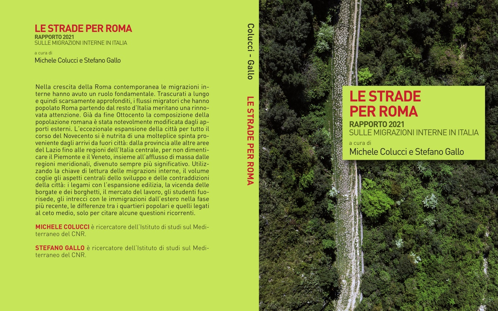

Le immigrazioni a Roma Capitale dal 1870 ad oggi Storia, memoria, territori
17 novembre 2021 / 17:00 – 19:00/
Le strade per Roma. Rapporto 2021 sulle migrazioni interne in Italia (Il Mulino 2021) a cura di Michele Colucci e Stefano Gallo
Presentazione del volume
Utilizzando la chiave di lettura delle migrazioni interne, il volume coglie gli aspetti centrali dello sviluppo e delle contraddizioni della città: i legami con l'espansione edilizia, la vicenda delle borgate e dei borghetti, il mercato del lavoro, gli studenti fuorisede, gli intrecci con le immigrazioni dall'estero nella fase più recente, le differenze tra i quartieri popolari e quelli legati al ceto medio, solo per citare alcune questioni ricorrenti.
Vittorio Bo (Istituzione Biblioteche e Centri culturali di Roma Capitale),
Simona Lunadei (Irsifar),
Alessandra Gissi (Università L'Orientale di Napoli),
Giulia Zitelli Conti (Università Roma Tre)
Partecipano alla discussione curatori e autori del volume
L'ingresso in sala avverrà previa verifica del Green Pass e fino all'esaurimento dei posti disponibili
1 ottobre 2021 / 9:30 – 16:15 /
150 anni di immigrazioni a Roma capitale: il periodo dal 1945 a oggi
evento in presenza e in diretta streaming
Dopo il convegno di apertura dello scorso novembre e il ciclo di incontri territoriali in sei biblioteche di quartiere, il progetto sui 150 anni di immigrazioni a Roma giunge al secondo convegno, dedicato al periodo tra il 1945 e oggi.
Verranno analizzati gli anni della ricostruzione e delle consulte popolari di quartiere, della grande immigrazione dal Meridione, della speculazione edilizia e dello sviluppo della Roma odierna, delle borgate e dei complessi residenziali, dell'intreccio tra mestieri tradizionali e nuove figure della mobilità, della crescita e del consolidamento dell'immigrazione straniera.
Corrado Bonifazi, Oliviero Casacchia, Fabrizio Ciocca, Luciano Governali,
Giulia Fiocca, Alessandra Gissi, Frank Heins, Ingy Mubiayi, Luisa Natale, Lidia Piccioni,
Ilaria Romeo, Igiaba Scego, Salvatore Strozza, Mohamed Tailmoun, Luciano Villani
Moderano: Bruno Bonomo, Ginevra Demaio, Vittorio Vidotto
I temi specifici della mobilità nella Capitale saranno letti alla luce di questioni fondamentali per la comprensione della storia dell'Italia contemporanea: il processo di decolonizzazione, il ruolo del ceto medio e dei lavoratori manuali, l'evoluzione dei servizi alla persona, le mobilitazioni di quartiere, l'aspetto generazionale, la presenza territoriale delle religioni, i riflessi dei processi sociali nella letteratura.
Contatti:
Michele Colucci
-
Stefano Gallo
-
Francesco Di Filippo
Programma delle iniziative: i convegni scientifici e gli eventi divulgativi rivolti ad aspetti specifici del territorio.
Convegno di apertura: Le immigrazioni a Roma Capitale dal 1870 alla Seconda guerra mondiale
- I caratteri di lungo periodo
- Dal 1870 alla prima guerra mondiale
- Dal fascismo alla seconda guerra mondiale
- La seconda guerra mondiale
Incontri, convegni, testimonianze, presentazioni nelle biblioteche e nei quartieri organizzati con il coinvolgimento della cittadinanza, delle scuole, delle istituzioni e dell’associazioni locali.
Secondo convegno: "150 anni di immigrazioni a Roma capitale: il periodo dal 1945 a oggi"
Roma, sala della Protomoteca del Campidoglio- Le migrazioni interne
- La prima fase dell'immigrazione straniera
- Il consolidamento dell'immigrazione straniera
CNR - ISMed e
Biblioteche di Roma
L'unità di ricerca
Cogliendo l'occasione del 150º anniversario di Roma Capitale, l'Istituto di Studi sul Mediterraneo del CNR e Biblioteche di Roma hanno avviato un programma di lavoro
congiunto sulle migrazioni che hanno popolato la capitale. Città cosmopolita per eccellenza, la storia di Roma dal 1871 a oggi può essere letta come una continua vicenda di immigrazioni.
La collaborazione tra l'esperienza scientifica di ricerca e divulgazione dei ricercatori del Cnr-ISMed e l'eccezionale patrimonio culturale e sociale maturato dal personale di Biblioteche di Roma ha come obiettivo una migliore comprensione delle dinamiche migratorie, in particolare quelle che hanno popolato e trasformato il volto di Roma.